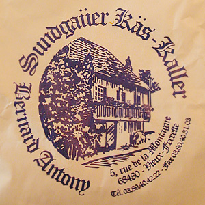

Diverse Käse von Maître Antony
6 von 6http://zeus.zeit.de/text/2003/22/Siebeck_2fKolumne_22

http://zeus.zeit.de/text/2003/22/Siebeck_2fKolumne_22

Montagsplausch Nr. 66. Der Abend hiess «soupe de courge (nach bocuse) und diverser käse vom maitre antony».